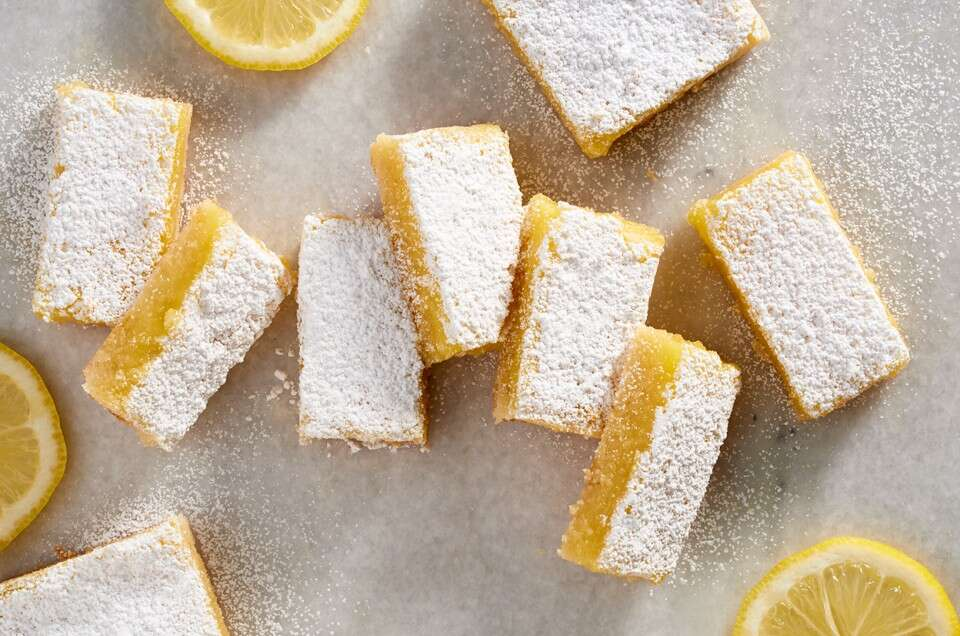

gf lemon bars
description
ingredients
crust
- 2 c almond flour
- 6 tbs granulated sugar
- 3 tbs cornstarch
- 1/4 tsp salt
- 6 tbs butter, cold, diced
filling
- 2 large eggs
- 1 c granulated sugar
- 1/3 c lemon juice
- 2 tbs cornstarch
- pinch of salt
steps
- preheat oven to 350 degrees and grease an 8' square pan
- to make the crust: combine the dry ingredients in a small bowl, whisking to blend. add the cold butter, working it in with your fingers or a pastry blender until the mixture is evenly combined and crumbly
- dump the mixture into the prepared pan, shake to distribute, press the crust into the bottom and about 1/2" up the sides of the pan
- bake the crust until it is light golden brown, about 8 to 10 minutes.
- to make the filling: while the crust is baking, whisk together the filling ingredients.
- remove the crust from the oven, and pour the filling over the hot crust. Return the squares to the oven and bake them for 14 to 18 minutes, until the filling appears set.
- remove the squares from the oven and allow them to cool in the pan before cutting into 2" pieces. cover the squares, refrigerate until ready to serve.